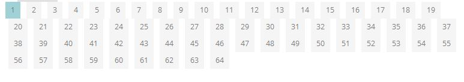
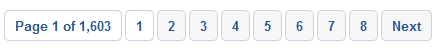
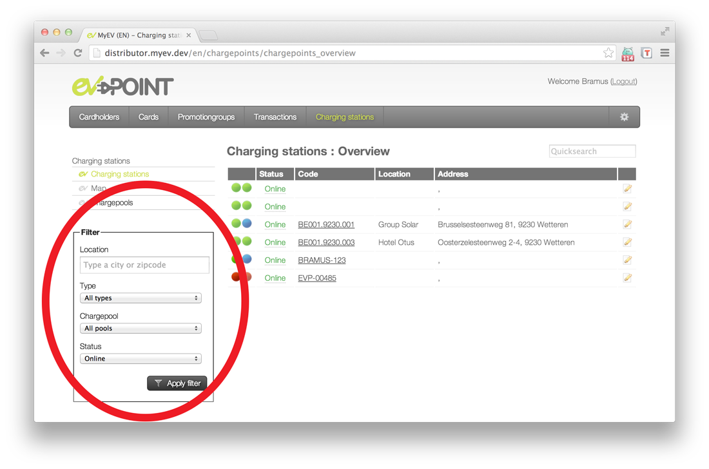

Serverside Development [JLW506]
08.a few more pointers
on pagination and filtering
Pagination

Pagination?
-
When having too many items to show, split them into several pages
- e.g. search results, filter results
- Paginator typically placed beneath the results
Examples
-
Bad examples:

 -
Good example:

- Always indicate how many results there are
- Always indicate how many pages there are
-
Show a reasonable number of pages
- The number row automgically adjusts itself based on the current page
- First two and last two pages always shown
- All, except the current page, clickable
-
Always indicate current active page
- Don't link it though!
-
Always show next/previous buttons
- Only clickable when necessary
- Don't show First/Last links (no direct value)
Manual approach: what we would need
- From database: Total number of items
- Number of items to show per page
- Parameter in url: current page (default = 1)
-
To calculate: number of pages
$numPages = ceil($numItems / $numItemsPerPage); - From database: a subset of items (ORDER BY, LIMIT)
- A pagination rendering strategy
Pagination in Laravel (1)
-
Use the
paginatemethod with Query Builder or Eloquent-
detects
?pagequery string argument on the HTTP request - gets the items from the DB through proper limit and offset
- returns a paginator object which is loopable like a result set
public function index() // controller method { $users = User::where('votes', '>', 100)->paginate(15); // uncomment next line to change the paginator's target URL // $users->setPath('custom/url'); return view('user.index', ['users' => $users]); } -
detects
- Don't use
simplePaginate: it will only generate prev/next buttons
Pagination in Laravel (2)
-
Simple (bootstrap compatible) display in Blade
<div class="container"> @foreach ($users as $user) {{ $user->name }} @endforeach </div> {{ $users->links() }} Or with appended GET parameters: {{ $users->appends(['sort' => 'votes'])->links() }} -
It's up to you to find a better strategy than rendering all the page links
- Use the pagination methods in separate pagination templates: howto
- Watch this clever algorithm
Filtering

Filtering?
-
Allow a visitor to refine a set of results
- A form with checkboxes, dropdowns, etc. per defining property of the result set
- Typically placed on the left hand side, next to the results
- It is necessary to persist the form values (!)
-
Typically in combination with
- Pagination
- Sorting on specific properties of the result set (asc/desc)
Filtering scenarios
-
Filter via
GETparams- Pro: links can be shared/bookmarked
- Con: links become cluttered
- Con: filter not preserved after having navigated away
-
Filter via
Sessionparams- Pro: links don't become cluttered
- Pro: filter preserved after having navigated away
- Con: links can't be shared/bookmarked
Some Laravel filtering hints
-
In the controller
- Validate your input data e.g.
'brand_id' => 'exists:brands' Sessionscenario: add your inputs to the session- For each activated filter field, apply a chainable method e.g.
if (…) $products->where('brand_id', $request->brand_id);(or use when)- Pitfall: in SQL, AND has precedence over OR. This happens when you chain
where()andorWhere()serially. Use (or)where grouping instead.
- Pitfall: in SQL, AND has precedence over OR. This happens when you chain
- Pass your search results, existing categories and persisted values to the View e.g.
return view('webshop.search', ['products' => $products, 'brands' => $brands, 'brand_id' => $brand_id]);
- Validate your input data e.g.
-
In the Views
- Collective's Forms & HTML supports persistence for many types of form elements. Set the persisted value as the element's default:
Form::select('brand_id', $brands, $brand_id) GETscenario: append your params to your pagination URLs e.g.$products->appends(['brand_id' => $brand_id ])->links()
- Collective's Forms & HTML supports persistence for many types of form elements. Set the persisted value as the element's default:
Advanced code generation hints
Resource controllers
-
Assign all your CRUD routes to a controller in a single line of code
- Generate the controller:
$ php artisan make:controller PhotoController --resource - Register the routes:
Route::resource('photos', 'PhotoController'); // available options: 'only', 'except' - Result:
Verb URI Action Route Name GET /photosindex photos.index GET /photos/createcreate photos.create POST /photosstore photos.store GET /photos/{photo}show photos.show GET /photos/{photo}/editedit photos.edit PUT/PATCH /photos/{photo}update photos.update DELETE /photos/{photo}destroy photos.destroy - In a web app, you will need to spoof the methods DELETE, PUT and PATCH
- Generate the controller:
Collective's Form Model Binding
-
Populate an HTML form based on the contents of a model
- Start the form by
{!! Form::model($user, ['route' => ['user.update', $user->id]]) !!} - Flash data has precedence over the contents !
- Don't forget to
Form::close
- Start the form by